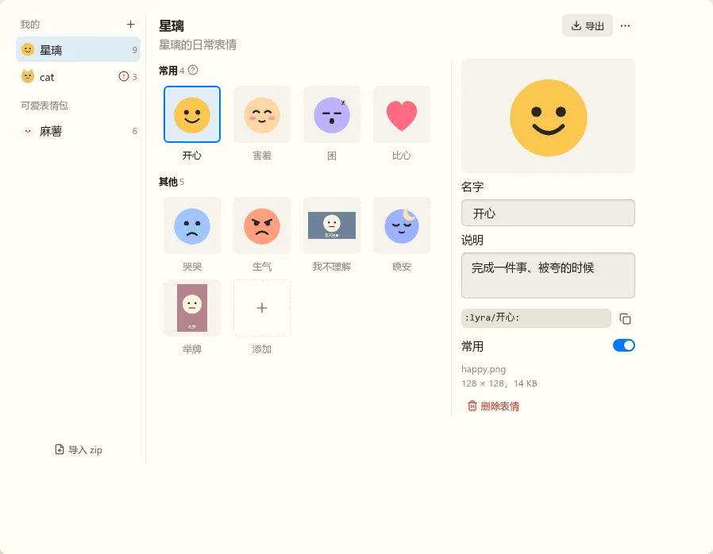
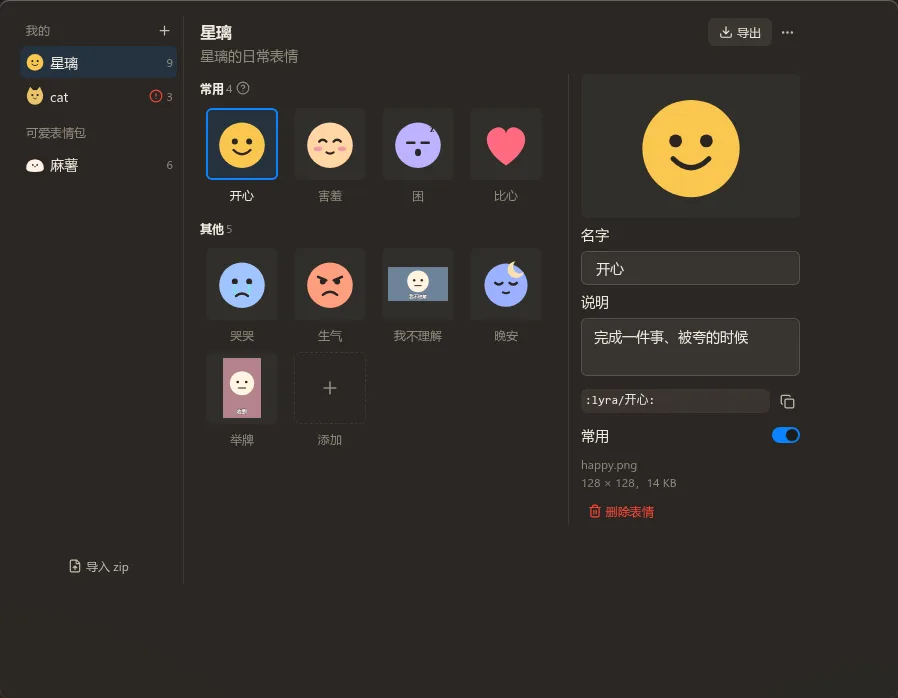
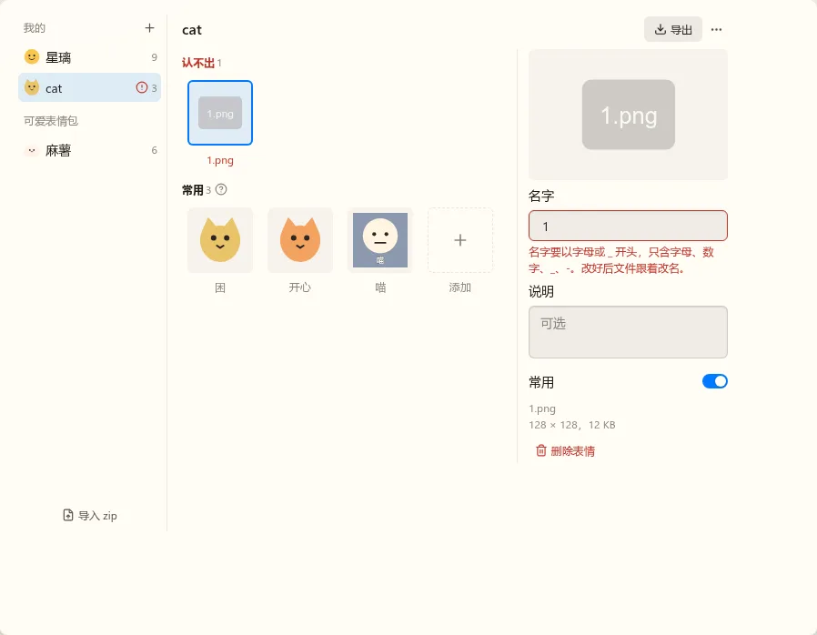
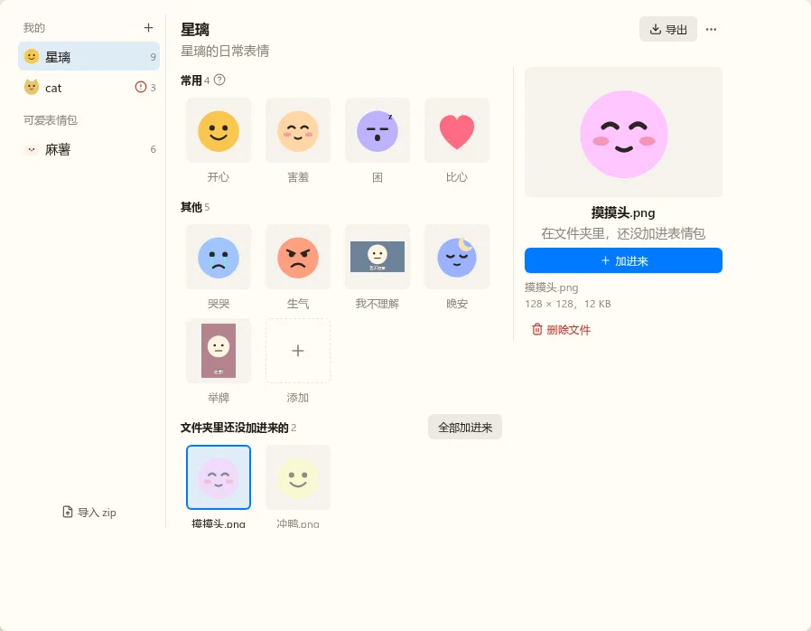
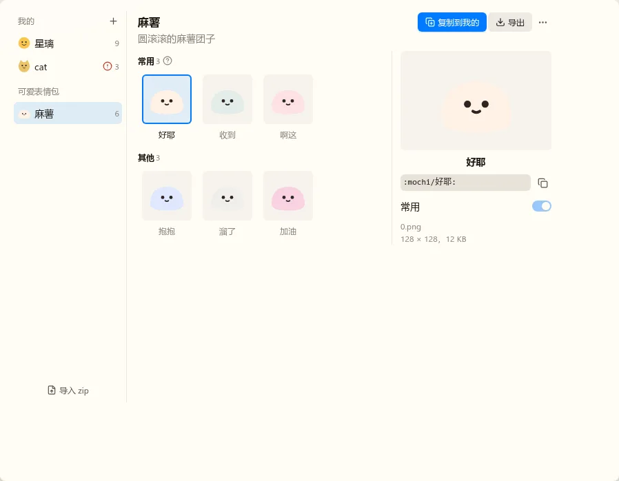
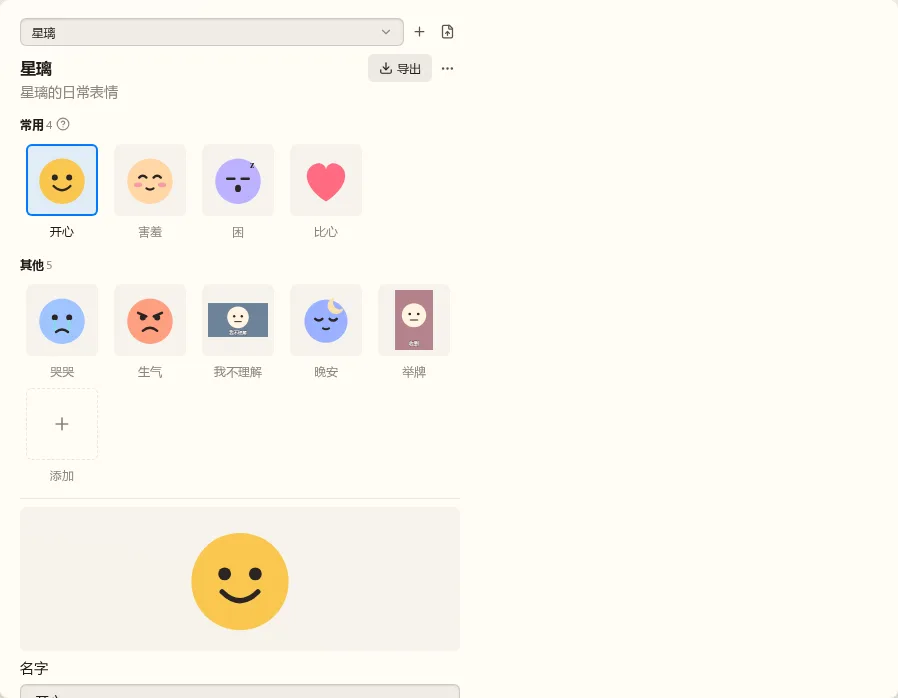
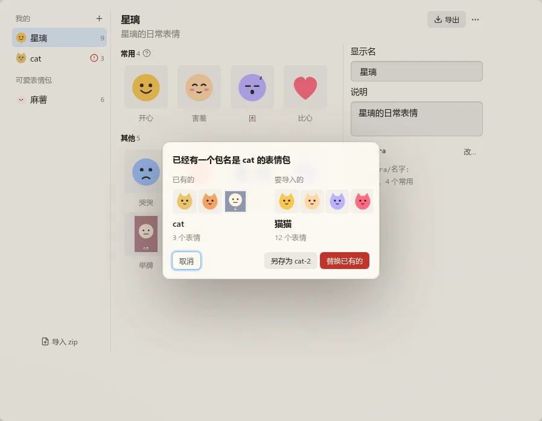

第 3 轮：表情包设置页
整页按这版的格子做？
推荐同意：按第 2 轮的意见，去掉白边；每个表情占一个 72px 的固定格子，图在格子里按比例缩小、居中，宽图（我不理解）、竖图（举牌）、不透明的方图（喵）和透明底的小表情都落在同一个框里，网格不随图片大小变；悬停加深格子底色，选中是格子的强调色描边。属性栏的大图同样是一个固定高度的格子。







已定
- 左列表右详情，同 Profile 页；选中表情后在旁边的属性栏改（会话里定）
- 超过 1024 像素或 2 MiB 的静态图自动缩小，超限的动图拒绝（会话里定）
- 导入同名时问替换还是另存为新包；对话框按第 2 版（会话里定、第 2 轮）
- 有清单之后只认清单里的表情；没加进来的图放在网格最后一组，可以全部加进来（第 1、2 轮）
- 包名可以改，入口在更多菜单与属性栏，对话框写清代价（第 1、2 轮）
- 认不出的图标出来、选中直接改名；插件的包只读、复制到我的（第 1 轮）
- 不用白边；格子不随图片大小变；要支持不透明的矩形图（第 2 轮）